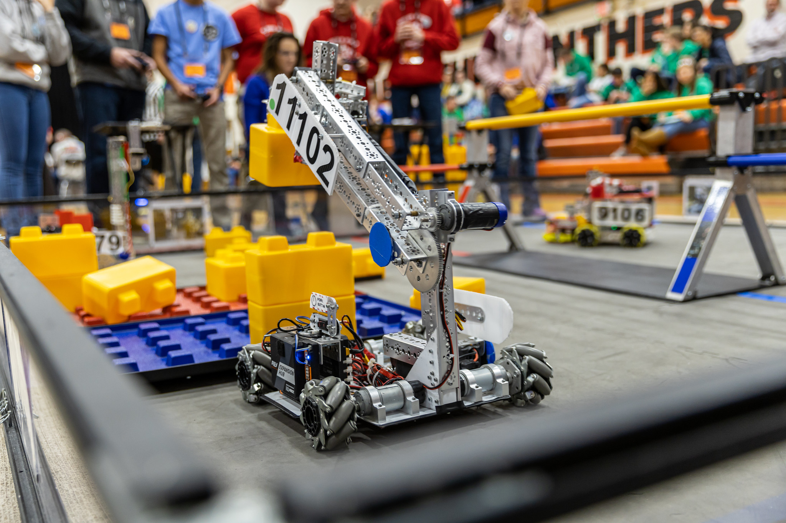

A robotics competition for students in grades 7-12 that combines the excitement of sport with the rigor of science and technology.

FIRST Tech Challenge (FTC) is a robotics competition designed for students in grades 7-12. Teams of up to 15 students work together to design, build, program and operate robots to compete in an alliance format against other teams.
FTC teams use a reusable robotics platform to design and build robots. Students learn mechanical engineering principles, CAD design and manufacturing techniques. The platform encourages innovation while providing a solid foundation for learning.
Robots compete in matches where they have to perform various tasks on a 12'x12' field. Teams have to balance autonomous and driver-controlled periods, requiring both programming skills and strategic thinking.
FTC emphasizes Gracious Professionalism® and Coopertition®. Teams work together, share knowledge and help each other succeed. Competition is about more than winning — it's about learning, growing and inspiring others.
Each match consists of an autonomous period (30 seconds) during which robots operate without driver control, followed by a driver-controlled period (2 minutes) during which teams operate their robots. Teams compete in alliances of two teams, working together to score points.
All teams play several matches. Alliances are randomly paired in each match.
Top-ranked teams pick alliance partners for the elimination rounds.
Alliances compete in a bracket format to determine the champions.
Teams are recognized for robot performance, design, innovation and core values.
Each FTC season includes a new game challenge released in September. The game includes specific tasks, scoring opportunities and rules teams must follow. Understanding the game manual is critical for competitive success.